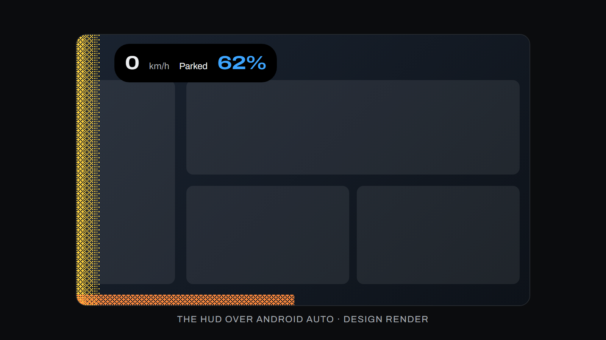

I got tired of opening a laptop every time i wanted Android Auto on the dash, so this is the phone version of that. It sits on your hotspot, finds the scooter, remembers it, and reconnects by itself next time.
Setup unlocks ADB in memory, installs the mods you picked, grants the permissions they need and puts the dash back on its home screen. Then there's one button. You hold it, and Android Auto goes on the dash.
That's a demo of the real button. Try holding it.
Speed, drive mode, charge and range sit top left in one pill, left of Android Auto's search bar. Indicators glow yellow at the screen edges in ordered dither. The bottom edge is a power meter that goes orange on draw, green on regen and red when you brake.
The main window never takes a touch. It is not touchable and not focusable, so every tap goes to Android Auto. The numbers are decoded read-only from the scooter's own CAN broadcasts. The only frames it sends are the stock lock, unlock and boot commands, from a small bar that only appears while the scooter is stopped.

On Android Auto 17.4 and later, Self-Mode is gone, so the app uses the headunit server on port 5277. If the server's off it opens the settings and shows the one manual step, the three-dot menu, then Start headunit server. After that it opens Android Auto on the scooter itself.
ADB is authorised with an RSA key bind-mounted in RAM. No partition is written and a restart removes it. The app leaves the power manager and auto-lock alone, so the scooter still locks itself.
The dash and its physical warnings are the authority. Anything here can be late, wrong or blank, so glance only while riding, which is kinda obvious but i'm saying it anyway.
| Model | Head unit | MoveOS | Status |
|---|---|---|---|
| S1 Pro (Gen 2) | Snapdragon 625 | 3, 4, 5 | Tested |
| S1 Pro (Gen 1) | Snapdragon 212 | 2 to 5 | Expected to work |
| S1 (Gen 1) | Snapdragon 212 | 2 to 5 | Expected to work |
| S1 Air | Octa-core | 3, 4, 5 | Tested |
Only the 7-inch Android touchscreen. Segmented-LCD and non-Android clusters are out. "Tested" only means it worked on my own scooter, on the firmware it had then. It is not a promise it works on yours. The Gen 1 rows are a guess from the hardware.
Get the latest release